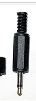
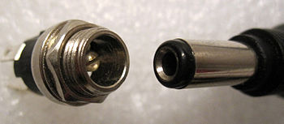

Maintenance Blog
March 23, 2017
- Modifed newer Learning Ladders to secure base
February 22, 2017
- ----- found one of the AC to 12V DC adaptors was intermittent. This could also cause the issue --- described last night. Some of these have been opened and repaired in the past. Currently these are low cost items not worth repairing. Especially if opening the box requires a dermal. New adaptors will be CSA or cUL approved and high efficiency models. Modifying the adaptors voids the approval.
- The other issue with these power adaptors and Pasco that has been a long time irritant is that they use a mono phone plug rather than a mostly standard barrel connector. Phone plugs should not be used for power because if they are inserted only part way then can cause a short. We have been using the existing adaptors for years (perhaps a couple decades) but this device would be more reliable if we got new supplies and replaced the existing sockets with barrel sockets.
Mono phone plug  can cause a short if used as a power connector this can cause trouble.
Common barrel connector 
I’ll try a few of the following parts and see how they work out with the existing controller.
- 993-1232-ND AC adaptor
- CP-065A-ND socket
February 21, 2017
- I have gone around the lab and replaced all ten of the o-rings after getting you e-mail. There was noticeable wear on them. Uneven wear was likely the crux of the issue. At least it could make the speed variable.
- There is one apparatus where I added a shim to raise up the motor arm and drive wheel as it was very low on the rotating disk.